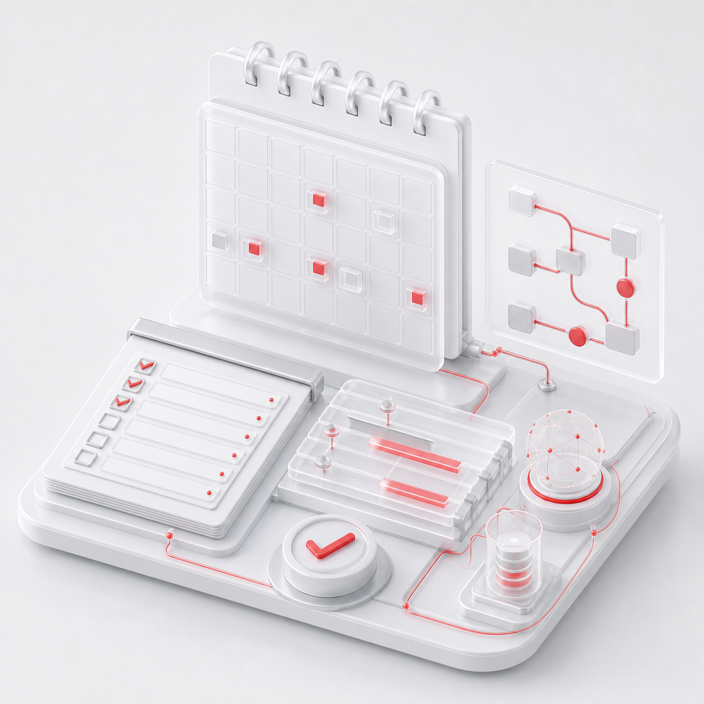

当前问题
项目分散、过程难跟踪，成长成果难沉淀
培训完成不等于能力形成，需要持续支持实践与评价。
以教师专业发展需求为核心，连接诊断、规划、培训、实践、
评价与持续成长。
把需求诊断、项目设计、学习过程、教研实践和成长档案连接起来，让培训过程可管、成果可见。
培训完成不等于能力形成，需要持续支持实践与评价。
同时建设能力标准、课程、项目流程、教研社区与数据档案。
成长路径更清晰，培训过程更可控，发展支持能够持续优化。
平台沉淀教师、培训、学习、实践、成果和评价数据，为规划与运营提供支撑。
管理基础信息、成长数据、培训记录和成果，形成教师数字画像。
开展能力测评、短板分析、趋势分析并生成个性化发展建议。
覆盖项目、课程、学习过程、考核评价、证书与学分管理。
支持教研活动、成果展示、专家互动、同伴共研和案例沉淀。
提供备课、课件、教学设计、评价与学习辅助能力。
覆盖权限、加密、安全审计、隐私保护与合规管理。
每个环节都有明确任务和数据记录，使教师发展从一次活动变成长期过程。
能力测评、行为分析、短板识别与数字画像。
设定目标，形成能力提升规划与学习路径。
匹配课程、专家与线上线下学习资源。
教学应用、教研活动、成果产出与同伴共研。
评价学习过程、培训效果、教学成果与发展增值。
跟踪成长数据，推送建议并提供激励支持。
平台只是核心支撑，真正的教师发展还需要规划、课程、运营和成长生态协同。

AI 不替代教师发展体系，而是在关键环节提升分析、生成、推荐和陪伴效率。
智能测评分析，精准识别优势与发展短板。
生成培训方案，推荐个性化学习路径。
支持备课、课件、作业与评价全流程。
提供学习提醒、资源推荐与成长反馈。
辅助活动策划、资料生成、问题解答与经验沉淀。
同一套数据和运营体系，为个人成长、学校发展与区域治理提供不同层面的支持。
能力提升可视化、成长路径清晰化、专业发展持续化。
教师队伍优质化、教研活动常态化、教学质量持续提升。
教师发展数据化、决策支持科学化、资源配置精准化。
建设高素质教师队伍，提升区域教育数字化与整体质量。
案例内容来自现有项目页面，展示已核实的建设和运营工作。
从教师能力标准、项目运营和现有平台基础开始梳理。